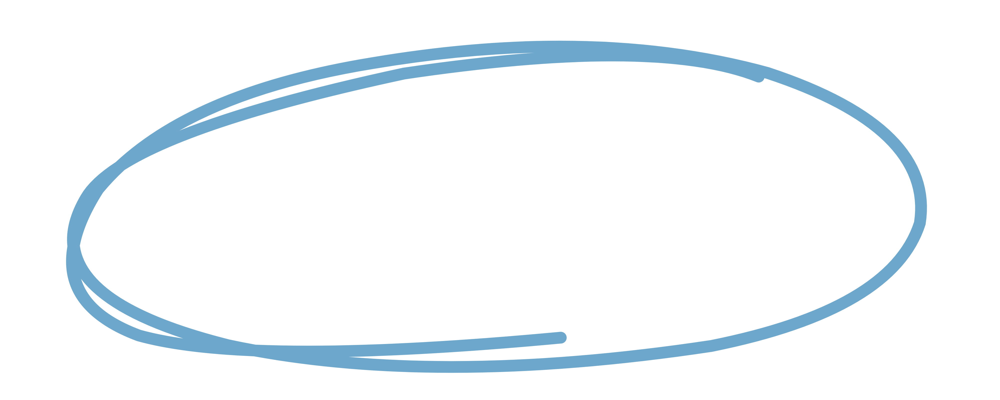
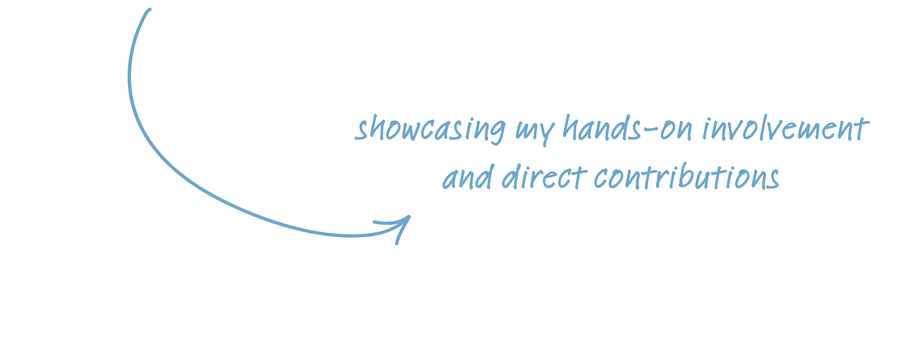

work
In my role at JPW Design Studio, I managed a dynamic portfolio of 40+ projects, ensuring seamless communication with clients and delivering timely website edits and launches. Using Squarespace, I turned clients' ideas into reality with custom HTML, CSS, and JavaScript for unique designs, animations, and features.
Daily collaboration with the team allowed me to actively contribute to innovative ideas and maintain a consistently high level of productivity. With a focus on SEO, I orchestrated website launches, overseeing domain connection, updating DNS, hosting setup, and ensuring optimal mobile optimization for tablets and phones.
JPW primarily focused on the Interior Design industry, which allowed me to gain a deep understanding of my clients and their field. By working on numerous websites within this niche, I became well-versed in my clients' needs and the crucial role of user experience in effective web design.

